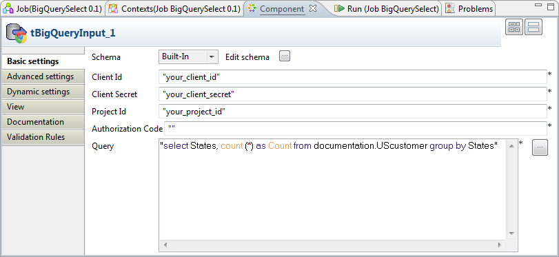

Avertissement
Ce composant est disponible dans la Palette du Studio si vous avez souscrit à l'édition correspondante de Talend Big Data Studio.
|
Famille de composant |
Big Data / Google BigQuery | |
|
Fonction |
Le composant tBigQueryInput se connecte à Google BigQuery et y effectue des requêtes. | |
|
Objectif |
Ce composant effectue les requête supportées par Google BigQuery. | |
|
Basic settings |
Schema et Edit Schema |
Un schéma est une description de lignes, il définit le nombre de champs qui sont traités et passés au composant suivant. Le schéma est soit local (Built-in), soit distant dans le Repository. Si vous utilisez Talend Open Studio for Big Data, seul le mode Built-in est disponible. |
|
|
|
Built-in : Le schéma est créé et conservé ponctuellement pour ce composant seulement. Voir également le Guide utilisateur de Talend Data Integration Studio. |
|
|
|
Repository : Le schéma existe déjà et il est stocké dans le Repository. Ainsi, il peut être réutilisé. Voir également le Guide utilisateur de Talend Data Integration Studio. |
|
Connection |
Client ID et Client secret |
Collez l'ID du client et son mot de passe ("secret") créés et visibles dans l'onglet API Access du projet hébergeant les services BigQuery et Cloud Storage à utiliser. |
|
Project ID |
Collez l'ID du projet hébergeant le service BigQuery à utiliser. L'ID par défaut de ce projet se trouve dans l'URL de la console d'API Google. Vous pouvez également l'obtenir en passant votre curseur sur le nom du projet dans l'outil BigQuery Browser. | |
|
Authorization code |
Collez le code d'autorisation fourni par Google pour l'accès en cours de construction. Pour obtenir le code d'autorisation, vous devez exécuter le Job utilisant ce composant. Lorsque l'exécution du Job est en pause pour afficher une URL, vous devez vous rendre à l'URL donnée afin de copier le code d'autorisation. | |
|
Query |
Saisissez la requête à utiliser. | |
| Advanced settings |
token properties File Name |
Saisissez le chemin d'accès ou parcourez votre système jusqu'au fichier de jeton à utiliser. Lors de la première exécution du Job avec le code Authorization code de Google BigQuery, vous devez saisir dans ce champ le répertoire et le nom du fichier contenant le nouveau jeton (refresh token) à créer et à utiliser. Si ce fichier de jeton a été créé et que vous devez le réutiliser, vous devez spécifier son répertoire ainsi que le nom du fichier dans ce champ. Si vous saisissez uniquement le nom du fichier de jeton, le studio considère que le répertoire de ce fichier est la racine du dossier du studio. Pour plus d'informations concernant le refresh token, consultez le manuel de Google BigQuery. |
|
Advanced Separator (for number) |
Cochez cette case pour modifier le séparateur utilisé pour les nombres. | |
|
Encoding |
Sélectionnez l’encodage à partir de la liste ou sélectionnez Custom et définissez-le manuellement. | |
|
tStatCatcher Statistics |
Cochez cette case pour collecter les données de log, aussi bien au niveau du Job qu’au niveau de chaque composant. | |
|
Utilisation |
Ce composant est utilisé en tant que composant d'entrée. Il envoie les données extraites au composant suivant.. | |
Ce scénario utilise deux composants pour effectuer une requête SELECT dans BigQuery et afficher les résultats dans le Studio.

La capture d'écran suivante présente le schéma de la table UScustomer utilisée comme exemple pour exécuter la requête SELECT.
L'objectif est de sélectionner les enregistrements contenant des Etats (des Etats-Unis) et de compter le nombre d'occurrences de chaque Etat dans ces enregistrements
Dans la perspective Integration du Studio, créez un Job vide, nommé, par exemple, BigQueryInput, depuis le nœud Job Designs de la vue Repository.
Pour plus d'informations concernant la création d'un Job, consultez le Guide utilisateur de votre Studio d'intégration.
Déposez un composant tBigQueryInput et un tLogRow dans l'espace de modélisation graphique.
Connectez-les à l'aide d'un lien Row > Main.
Procédure 1.1. Créer l'accès à BigQuery
Double-cliquez sur le tBigQueryInput pour ouvrir sa vue Component.
Cliquez sur Edit schema pour ouvrir l'éditeur

Cliquez deux fois sur le bouton
 pour ajouter deux lignes et saisissez le nom de ces
lignes dans la colonne Column. Dans ce
scénario, nommez-les : States et
Count.
pour ajouter deux lignes et saisissez le nom de ces
lignes dans la colonne Column. Dans ce
scénario, nommez-les : States et
Count.Cliquez sur OK afin de valider les modifications et acceptez la propagation proposée par la boîte de dialogue qui s'ouvre.
Dans votre navigateur Web, rendez-vous sur la page de la console Google APIs afin d'accéder au projet Google hébergeant les services BigQuery et Cloud Storage à utiliser.
Cliquez sur l'onglet API Access pour ouvrir la vue correspondante.
Dans la vue Component du Studio, collez, dans les champs correspondants, l'ID Client, le mot de passe Client et l'ID du projet, disponibles dans la vue API Access.
Procédure 1.2. Obtenir le code d'autorisation
Dans la vue Run du Studio, cliquez sur Run pour exécuter le Job. L'exécution se met en pause à un moment, pour afficher dans la console l'URL à utiliser pour obtenir le code d'autorisation.
Rendez-vous à l'URL, dans votre navigateur Web et copiez le code d'autorisation affiché.
Dans la vue Component du composant tBigQueryInput, collez le code dans le champ Authorization Code.
Le composant tLogRow présente les résultats d'exécution du Job. Vous pouvez configurer le mode de présentation dans le vue Component.
Pour ce faire, double-cliquez sur le tLogRow afin d'ouvrir sa vue Component. Dans la zone Mode, sélectionnez l'option Table (print values in cells of a table).
Pour exécuter le Job, appuyez sur F6.
La vue Run s'ouvre automatiquement et vous pouvez visualiser les résultats de l'exécution.